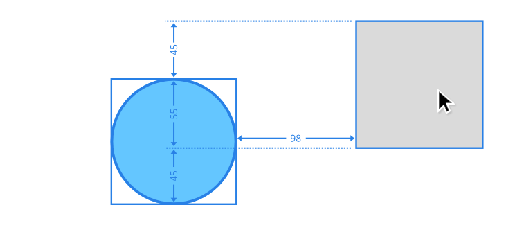
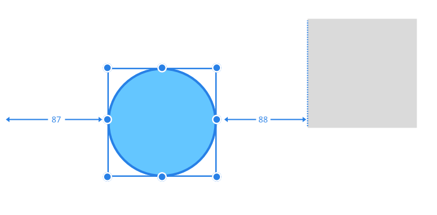

Measuring guides display the distance between a selected object and any object currently under your cursor.
Using the with a range of tools will display measuring guides as you move your cursor around the page. These guides relate to the distance between the selected object(s) and other page items and will update dynamically as the cursor moves.
For example, with a shape selected, measuring guides will show the distance between the page edges, using labeled arrows, when the cursor is positioned over a blank portion of the page. The guides will then update as the cursor moves over an object to show the size of the horizontal and vertical gaps between this object and the selection.

These measuring guides also display automatically when using the arrow keys to nudge a selection.
